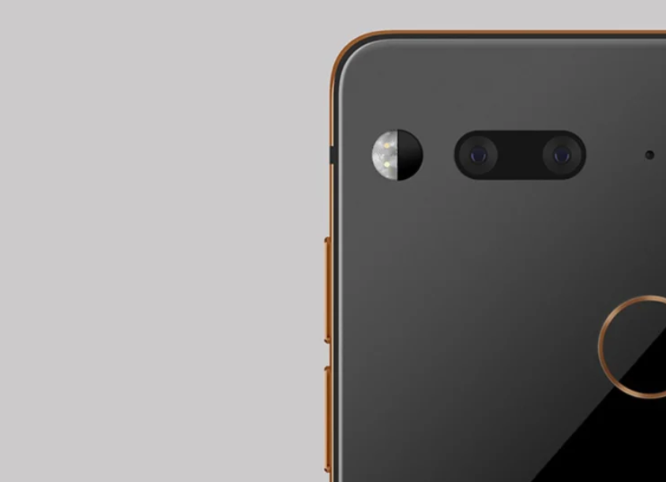
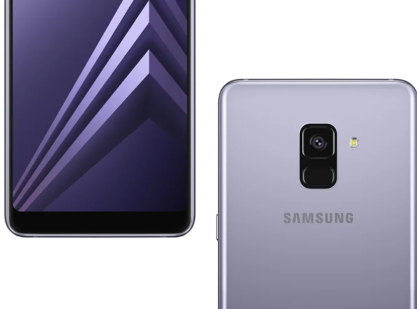
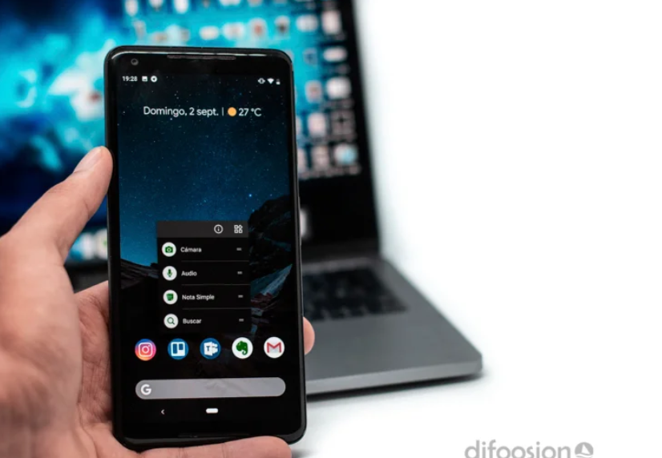

4 motivos para seguir apostando por Android en 2020
Con la llegada de los nuevos iPhone de 2020 Apple ha dado un golpe en la mesa, y es que “el iPhone económico” puede hacer bastante daño a la gama alta tradicional, al costar incluso menos que lo que piden los fabricantes en Android.
No obstante, sigue habiendo motivos de peso para quedarte con Android en los tiempos que corren, y es que nuestro sistema operativo sigue teniendo sus ventajas por más que pase el tiempo.
4 razones para quedarte con Android
Ante nada, decir que cada cual gaste su dinero como quiera, y que no es menos inteligente gastar 1.000 euros en un terminal que gastar 100. Un teléfono va mucho más allá de una herramienta para llamar y mandar WhatsApps, y no, un teléfono de 200 euros no hace lo mismo que uno de 1.000. Sin embargo, a nivel de hardware -que no de potencia-, en Android tenemos bastantes más posibilidades, dadas básicamente por el amplísimo catálogo de terminales del que disponemos.
Puedes obtener un móvil con radio FM, expansión mediante tarjetas MicroSD, conectividad WPS, Dual SIM real -no por eSIM-, carga rápida incluida en la caja… En nuestro caso no es relevante, pero los fanáticos de la RAM verán todo un filón, así como aquellos que quieran controles manuales en una cámara con la aplicación stock.
A nivel de sistema operativo, tenemos un mayor control de las notificaciones, un mayor catálogo de apps, y un sistema abierto personalizable y configurable al gusto. Para muchos esto es importante, y sin duda es uno de los mejores motivos para decidirte por Android.
Si no estás actualizado es porque no quieres
Nadie te obliga a comprar los móviles de las marcas más populares, ni estos tienen que ser los mejores. Actualmente, Nokia, OnePlus, Essential o Google ofrecen terminales que se actualizan durante bastante tiempo, y a un ritmo sencillamente increíble. No todos los móviles tardan 6 meses en actualizarse, y si tienes uno que lo hace, es porque tú quieres.
No, la fragmentación no ha acabado en Android, pero eres libre de comprar un terminal con buen soporte, y desde aquí te invitamos a hacerlo.
Puedes elegir el móvil que realmente necesites
Como decíamos, para nosotros un móvil va mucho más allá de llamar y mandar WhatsApps pero… ¿y si ese es el único uso que quieres darle? En Android tenemos terminales de todos los rangos de precio, y podemos elegir el que mejor se adapte a nosotros. Los españoles gastan una media de 200 euros por teléfono según Kantar, un precio que dista bastante de los más a partir de 849 euros de los que parten los nuevos iPhone.
Como decíamos, para nosotros un móvil va mucho más allá de llamar y mandar WhatsApps pero… ¿y si ese es el único uso que quieres darle? En Android tenemos terminales de todos los rangos de precio, y podemos elegir el que mejor se adapte a nosotros. Los españoles gastan una media de 200 euros por teléfono según Kantar, un precio que dista bastante de los más a partir de 849 euros de los que parten los nuevos iPhone.
Android ya no es lo que era
Y menos mal. Android ya no es esa fábrica de lag y aplicaciones de mala calidad. Algunos de sus fantasmas siguen vivos, pero sin duda las últimas versiones de Android hacen que el sistema vuele, y que ya no sea necesaria tanta potencia para que se mueva con soltura. Cualquier gama media barato rinde suficientemente bien, y ni que decir que la gama alta mantiene un performance sobresaliente.
Como siempre, cada cual que elija el sistema y el terminal que quiera, los iPhone y los Android son buenas opciones, permitiendo elegir a cada usuario lo que realmente necesite.